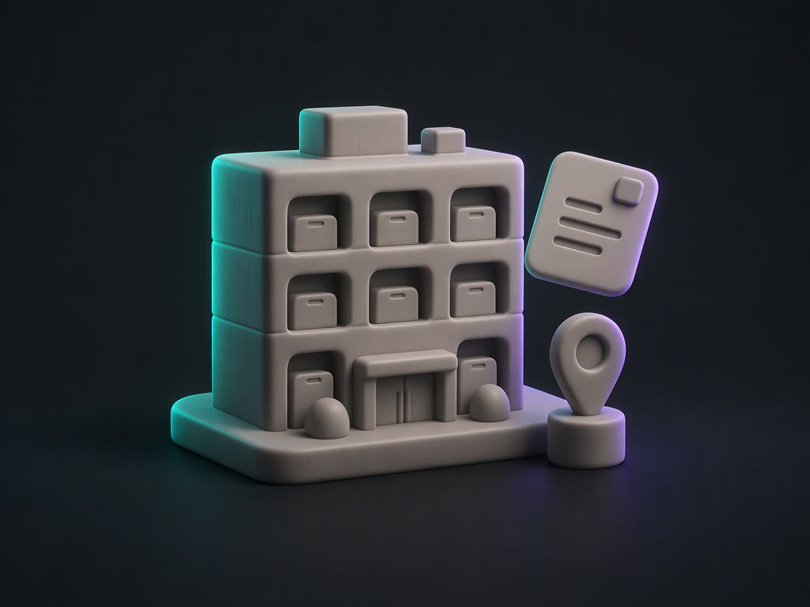
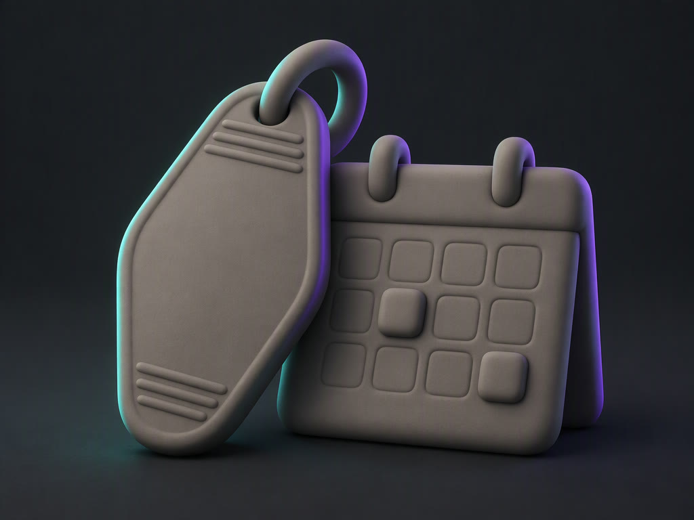
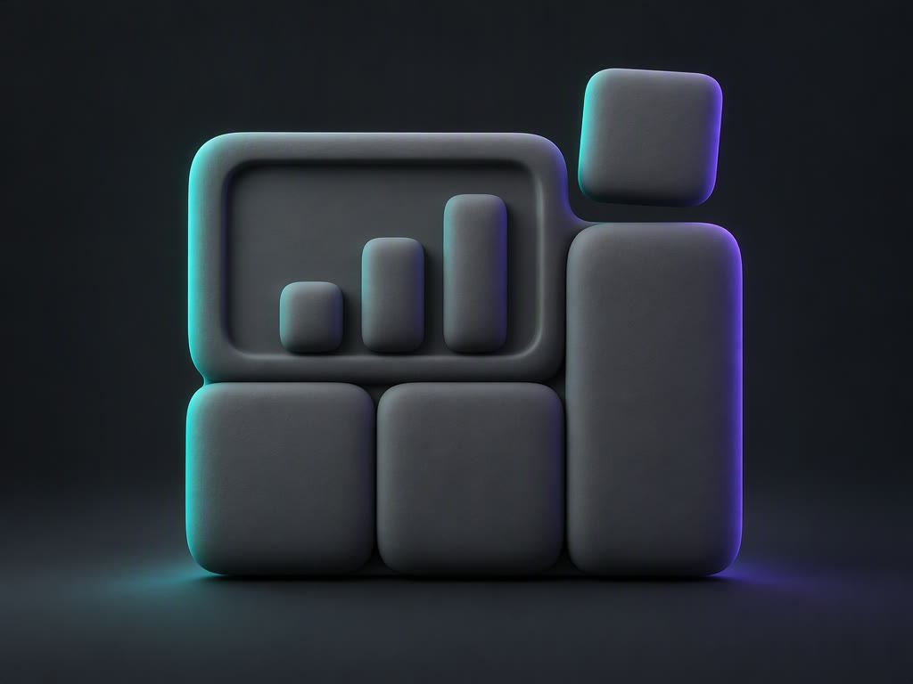
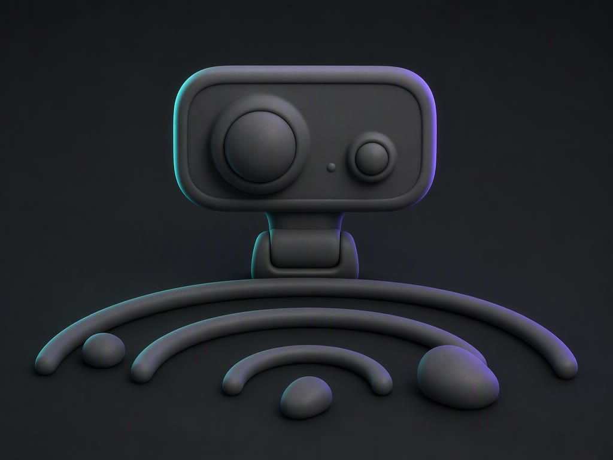

Languages & Frameworks
C# and Python carry the enterprise work; Dart, Java, PHP and the JavaScript / TypeScript pair cover the client and service layers.
Software Engineer · AI & Fullstack
I build enterprise systems that think — facility platforms, ERPs and AI-assisted tooling, taken end to end from schema to the pixel.
01 · About
Identity mark — moulded clay monogram.
No photograph published.
Results-driven Software Engineer building high-performance web and mobile applications powered by modern AI, automation and API-driven architectures.
Skilled in integrating LLMs through APIs and frameworks like Transformers and LangChain — chatbots, natural-language search and smart automation wired into systems that have to keep running while people are on shift.
Passionate about clean architecture, intelligent system design and AI-augmented solutions with precision and scalability. Currently in Abu Dhabi, building CAFM software for facility operations out of Dubai, alongside a set of ERP and billing systems shipped in 2025.
02 · Expertise
Six working layers, from the language runtime up to the way a team ships.
C# and Python carry the enterprise work; Dart, Java, PHP and the JavaScript / TypeScript pair cover the client and service layers.
One design, two runtimes — Blazor inside the ops console, Flutter for the field app that has to work with gloves on.
REST and microservice backends with query-level optimisation and modular refactoring — the work behind a 25% response-time cut.
LLMs wired through APIs and frameworks, plus deployed models on Hugging Face and OpenRouter — chatbots, NL search, anomaly alerts.
Centralised data architecture with real-time stock, batch-expiry and reorder thresholds modelled where they are actually queried.
Agile and Waterfall delivery, containerised builds, role-based access control designed into the schema rather than bolted on top.
03 · Selected work
Facility platforms and ERPs built for people who run buildings, pharmacies and front desks. Client repositories are private — the numbers below are the ones I can publish.

2025 · ongoing Facility platformMulti-department facility operations running on disconnected spreadsheets: assets, work orders and maintenance schedules with no shared source of truth.
Stock, batches and expiry dates tracked by hand, so reorder decisions arrived late and billing had to be re-keyed.
40%reduction in manual errors
Invoicing, tax and payment tracking lived in separate places, so reconciling a month took longer than billing it.
30%faster billing cycles

2025 Hospitality ERPReservations, housekeeping and front-desk billing coordinated over phone calls, so room availability was never trustworthy in the moment it mattered.

2025 · ongoing Unified ERPFour systems, four versions of the truth. Sales, customers, employees and the ledger needed to answer to one platform.

2023 Assistive visionA person with low vision cannot tell who is approaching or what is in the way until it is far too late to react.
No flagship system filed under this filter
Try another filter.
04 · Experience
Mar 2025 — Present
Jun 2023 — Feb 2025
05 · Credentials
The assistive-vision project behind the computer-vision work above grew out of this degree.
06 · Services
Six engagement shapes, pressed into the same surface. Freelance and contract, UAE and remote.
Production web apps built end to end, not a prototype that needs someone else to finish it.
MERN · Java · PHP · .NETOne codebase, both stores — including the offline field screens that facility work depends on.
Flutter · Android & iOSSchemas, services and contracts designed so the next module is boring to add.
REST · MicroservicesDesign files turned into shipped interfaces, with the states a designer never drew.
Figma → codeInheriting something that already runs? Profiling, patching and keeping it upright.
Query tuning · refactoringStack decisions, architecture reviews and a second opinion before the budget is committed.
Advisory07 · Contact
Abu Dhabi, UAE · Open to freelance. Facility management, ERP and AI-integration work welcome — government and private.
Compose a mail